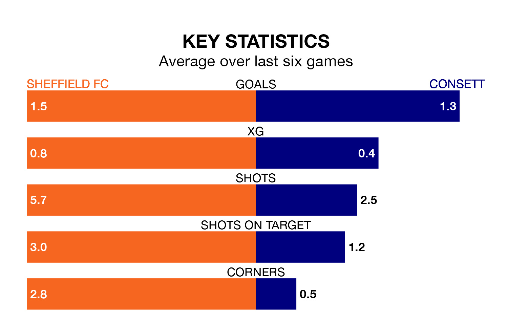

Sheffield FC host Consett on late Tuesday on the back of three consecutive wins in the Northern Premier League Division One East.
Sheffield FC have picked up 10 points from their last six games, and they face a Consett side who have lost their last two matches, and collected six points from the last possible 18.
With 41 goals in 23 games so far this season, Consett are scoring more than average in the league with 1.8 goals per game. And they are conceding fewer than average, letting in 30 goals at a rate of 1.3 per game.
Sheffield FC are also above average scorers, with 1.7 goals per game, compared to a league average of 1.5. They have also conceded 1.7 goals per game.
The home team are 14th in the table after 23 games, of which they have won nine and drawn three, earning 30 points.
The visitors are seven places ahead of Sheffield FC in seventh, with 13 wins and two draws putting them on 41 points.
In the last three years, Sheffield FC and Consett have played each other on three occasions. Consett won two of them and they drew once.
Their last meeting was on August 26, when Consett won 4-1 at home.
Sheffield FC's last match was on Saturday, a 2-1 win against Bridlington Town.
Consett lost 1-0 against Belper Town last time out, also on Saturday.
Updated: 12:18 (UTC), 19/02/24